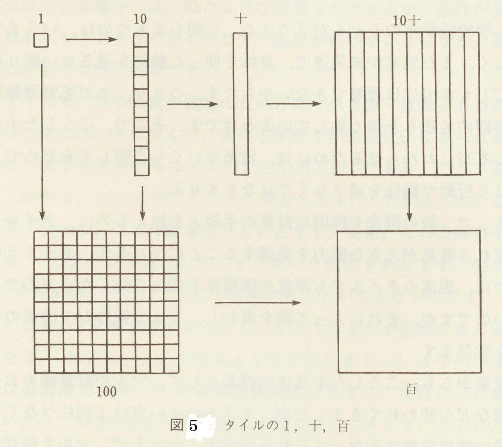
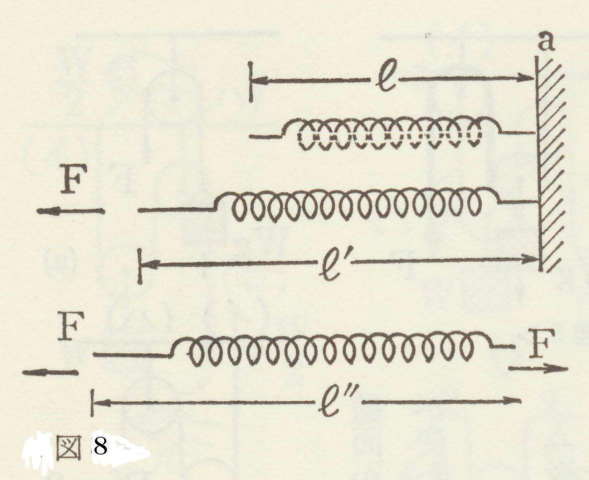

| 「分かる」ことの心理学 | |
| 鈴木敏昭 | |
| soutaisya (2019) | |
本書は岡本夏木の「一次的ことば」と「二次的ことば」をめぐる現場の先生たちを交えた研究会の中で筆者が「分かる」とはどういうことかを分担して報告したものを土台にしている。
岡本夏木の言う「二次的ことば」は用語そのものの分類（一次か二次か）の問題ではない。その使い方＝理解の仕方の問題である。同じ「重さ」という語も一次的ことば（自分流の象徴的意味）にも二次的ことば（科学的用語）にもなりうる。そこで二次的ことばの問題について「分かる」とはどういうことかから接近してみたい。
その一つは人類の文化的科学的遺産（概念）を子どもが継承することを援助することである。言い換えれば、それらを子どもが「分かる」状態にいかにもっていくかということである。では「分かる」とはどういうことであろうか。人間がものごとを認識し理解するというのはその人の認識の枠組みの中に取り込めたということである。
（１）「分かる」とはどのような状態か
(ｱ)抽象的な概念を具体的なイメージにできたとき。
(ｲ)頭の中にモデルを作り出したとき。ただし完全なモデルはないが。
(ｳ)頭の中にイメージができ、その中で自分の視点が定まるとき。例えば、図１が図２のように変換できたときである。
(ｴ)応用的に別の問題が解決できること。
(ｵ)その解決の根拠が示せること。そのためには知的好奇心が必要である。(ｶ)機能が分かったとき。つまり何のためにそうなっているのかが分かったとき。
(ｷ)現実の社会と結びつけることができること（実践性）。
(ｸ)それまで関係ないと思われていたさまざまな事象と関連づけができ、世界が広がること(佐伯,1983)。
（２）「分かる」ための方法
(ｱ)時間や空間的な全体像をつかむ。
(ｲ)区別し分類して整理する。
(ｳ)筋道を立てる。理由を調べる。
(ｴ)空間関係が分かる。
(ｵ)仕組みが分かる。見かけだけに左右にされない。
(ｶ)規則・法則が分かる。約束事を知る(山鳥,2002)。
（１）知識と理解
理解するためには知識が必要である。知識が増えることで視野が広がり、視点変換や発想転換が可能になる。それがあらたな理解を促す(教養の心理学を考える会,2003)。
（２）諸部分の統合
分かった状態とは関連づけができなかった部分間が統一的な文脈によって矛盾なく関連づけができた状態と言える。文脈とは物事が埋め込まれている背景であり、それが物事を理解するために不可欠である。文脈は持っている既存知識（スキーマ）を発動・活性化させるためにも必要である。それによって多義的な意味の確定と省略の補填がなされるのである。それが分かったという状態をもたらす(西林,1997)。
（３）「分かった」へのゆさぶり
西林によれば、最初の「分かった」状態を壊す必要がある。それには第１に部分間に矛盾があることに気づかせたり、その意味を変化させることで統一的な全体的文脈を変化させるか、第２に全体的文脈の変換から部分の解釈を変化させるかの２つの方法がある。例えば、「注文の多い料理店」の読解における文脈提示の有効性についての小学校での実験(p140)がある。第３の方法として２つの方法を組み合わせ、部分から引き出される意味をまず少し変え、そこで統一的文脈を構成し、それによって再度、部分の意味を変化させるものがある(西林,1997)。
（４）「分かる」という実感
「分かる」ためにはどこが「分からない」かが意識されている必要がある。それについて試行錯誤的に考えていると突然、直観的に「分かる」状態になる。つまり「分かる」過程そのものは無意識の過程である。そこで自己の体験との何らかの接点ができ、置き換えられてときに「分かる」と感じるのである(山鳥,2002)。
（１）「分かったつもり」とは
「分かったつもり」とは主観的には分かったのに、新たな経験によって、分かっていなかったことが判明するような最初の分かった経験のことである。当人は分かったつもりなのでそれ以上の探索の必要性を感じない(西林,1997)。
（２）分かったつもりの原因
文章を読んで分かったつもりになっても質問されると分かってなかったことが分かる。その原因として大雑把な文脈によって部分の意味の理解も大雑把になることが挙げられる。概略が分かったことで部分には注意が払われないともいえる。部分の解釈が文脈の強い影響によってねじ曲げられることがある。読み手が使用する文脈によって部分への注意が異なる。文脈によっては見込みで読んでしまうように導く。部分に注意が向けられないと、それらの矛盾に気づかない(西林,1997)。
ピアジェは物事の理解の枠組みのことをシェマと呼んでいる（シェムとの区別はここでは無視する）。シェマの根源は一つの体制化された、反復可能な感覚・運動的活動の単位である。例えば、乳児が物を口にもっていって吸う
ことによって、それをある馴染みのものとして同定したとする。吸うというのは一つの原初的なシェマであり、そのシェマを発動させることにより、乳児なりにその物を「意味づけた」のである。これを同化という(図３)。
「分かる」というのは、このような同化の体験なのである。ただし既成のシェマにただ同化するだけであれば認識の発展はない。また純粋の同化というものはありえない。事象を同化するためにも大なり小なりシェマを変容させている。例えば、物を吸うときに、いつも全く同じ吸い方をするのでなく、物のバリエーションに合わせて微妙に変化させている。これを調節という(図４)。
外界に対する様々な経験を重ねることによって、シェマは分化し多様になるとともに相互に協応し、体系化していく。ピアジェによれば、１歳前後になると感覚・運動的活動は内化し、反応の素描とでもいうものになる（つまり実際に発現することは抑制され、内的に縮約された形で｢なぞられる｣）。こ
れが表象の始まりである。こうしてシェマも表象レベルのものになる。
しかしシェマの発達の基本的なあり方は感覚・運動期と同じであり、表象のレベルのシェマも分化と協応を重ねながら、概念的論理-数学的シェマの体系へと向かう。
ピアジェは脱中心化の側面を強調しがちだが、高度の論理-数学的シェマのレベルでも同化の背景（根源）には感覚・運動的シェマとつながっている面もあると考えられる。ここに「分かる」ことの身体的イメージとのつながりの根拠もある。
さてピアジェでは科学的概念の獲得を可能にするものはシェマが論理-数学的構造をもつことによるのだが、これはいわば自生的に発達していく。もちろんそういう面は重要であり、ピアジェはそこに限定して研究したといえばよいのかもしれないし、また自生的発達の面を刺激する外的要因を無視しているわけでもないのだが、教育というもう一つの面も考慮しないと認識の発達の総合的な研究にはならないだろう。
人類の文化的遺産である様々な科学的法則や概念は個人の認識の「自生的」発達では決して到達することができない。科学的概念は独自に教授されなければならない。しかし子どもの現在の発達水準を無視して、外から注入することもできない。単なる機械的暗記では「分かった」ことにはならない。
自生的概念（子どもがすでに馴染んでいる既成のシェマ）に依拠しなければ、「分かった」といえるものにはならないだろう。かといって自生的概念にただ同化するだけでは科学的概念にはならない。自生的概念においては到達できないが、おとな（教育者）の援助のもとでなら同化できる水準のものを与える必要がある。
自生的概念との連続性を失わず、しかも徐々に科学的概念の方へ引き上げていく（=調節）教授活動が求められる。そのような発達水準をヴィゴツキーは「精神間的」水準と呼んでいる。またそこで作られる発達の先端領域を「再近接発達帯(発達の最近接領域)」という。
文化的科学的遺産を「わがものとする」潜在的諸能力が他者の援助のもとで引き出された（=外化）あと、主体の能力として自由に「わがものとする」こと（=内化）ができるのである。
「子どもが一人でできることを[大人が]調べるとき、私たちは、昨日の発達を調べている。子どもが協同のなかでできることを調べるとき、私たちは明日の発達を明らかにする。この未成熟の領域、しかし成熟しつつある過程が、子どもの発達の最近接領域を構成する」(柴田編,2007)。
「子どもの発達の最近接領域とは、自主的に解決される問題によって規定される子どもの現下の発達水準と、大人に指導されたり、自分よりも知的な仲間との協同のなかで解決される問題によって規定される可能的発達水準との間の隔たりである」(柴田編,2007)。
「私たちは、常に教授の下限を決定しなければならない。しかし･･･教授の上限をも決定しなければならない。これら両方の限界のなかでのみ、教授は効果をあげることができる。これらの間にのみ、その教科の教授の最適の時期が存在する」(柴田編,2007)。
つまり生活的概念に基づいてしか科学的概念は理解できないのだが、そのような教授=学習の結果、以前の生活的概念をも変えていくような理解の仕方が必要なのである。
「自然発生的概念は、ある意味で下から上へ発達する。したがって、自然発生的概念およびその最初の発生は、とにかく子どもがあれこれの事物と直接にぶつかることと結びついている」(柴田編,2007)。
日常的には無自覚的に正しく使用するが、自覚的随意的にはできない。例えば、小２でも「ので」という接続詞をもった文の完成は生活的概念においてやや難しい。弱点は抽象化のできないこと、随意に操作できないこと、間違った利用が当たり前になっていることである。最初の発生は物に直接関係することと結びついている。子どもの個人的体験に満ちている。概念は孤立化されると、子どもを対象とより単純で直接的な関係におく。
体系の外にある概念は相互に経験的結合のみが可能で、混同心性的結合が支配している。体系とともに概念間の超経験的結合が可能となる。
ピアジェの言うように子どもの思想は、行動と夢想とから同時に出てきたような志向の総体により近い。しかし非体系性は彼の言うように子どもの思想の諸特徴の１つなのではなく、その根源である。子どもの思想の諸特質（自己中心性）は、概念の無体系性から生ずる。演繹の不完全さ、行列的配置、論理的総合の欠如、矛盾を感じ、とり除こうとする欲求の欠如などは個々の概念が、より上位の概念によって支配されていない無体系性から生じる。矛盾を障害として感ずることができるためには、２つの相互に矛盾する判断が１つの一般的概念の特殊例と見られることが必要である。
知覚の「論理」は一般に矛盾を知らない。「私がこの目で見た」ことに支配される。混同心性的図式では経験的結合ならびに知覚の「論理」が支配する。そのため、自分の印象の結合を事物の結合とみなす。これらの特質の根源は、自己中心性（自閉的思考の自律的論理）にあるのではなく、概念間の一般性の独自な関係にある。
概念は自然発性的適用がなされるほど自覚されることは少ない（クラパレードの意識化の法則）。ここでは対象の概念はもっているが、その概念そのもの、自分の思考活動は自覚しない。そこに含まれる注意は表象される対象に向けられ、思考活動そのものには向けられない。自然発生的概念の非自覚性は、その非体系性、一般化の欠如を原因とする(ｳﾞｨｺﾞﾂｷ-,1969)。
なお生活的概念の当たり前性・直接性・混同心性・非体系性・印象支配などは「思い込み」と密接に関連するであろう。
科学的概念は物に対する間接的関係からはじまる。直接的経験の範囲を越えている。それは概念それ自体に対する作業、概念の定義、概念の随意的適用からはじめる。
一方、科学的概念は子どもの豊かな生活的概念を前提とする。自然発生的概念としての成熟がなければ、科学的概念として随意的に使用できない。「科学的概念の発達は、常に自然発生的概念の成熟の一定の水準に依拠しなければならない」(柴田編,2007)。
しかし概念は体系の中でのみ自覚性と随意性を獲得する。体系性とは一般性の中で概念が他の概念に対する関係をもつということである。こうしてある概念が体系の中で位置づく。これがその自覚化を意味する。「他の概念によって媒介される関係ならびに内部にヒエラルキー的な概念相互の体系をもった科学的概念は、概念の自覚、すなわちそれらの一般化ならびに制御が最初に発生する分野である」(柴田編,2007)。概念形成の過程は教師の共同・援助のもとでなされ、共同のモメントが目に見えない形で存在している。ピアジェが見落としたのは意識化の前提としての科学的概念の教育という面である(ｳﾞｨｺﾞﾂｷ-,1969)。
なお文学・芸術・実技系では科学的概念というより、（大人のレベルを目指した）社会的成熟・理解を意味するのであろう。
科学的概念としての二次的ことばを理解させるためには教育的指導が不可欠であるが、それは子どもの一次的ことば（生活的概念）とまず接点を持たなければならない。乖離していては理解不能になる。
しかし理解した後では一次的ことば（生活的概念）に引きずられないように、それ自体が引き上げられるような教え方でないといけない。二次的ことばが分かると今までにないより広い地平に出られるようなものでなくてはならない。
科学的概念が「分かる」ということは自分の枠組みの他者（教育）による調節とその枠組みへの同化との統一といえよう。それは感覚・運動的活動あるいは身体的イメージにつながるような、科学的概念のアナロジー（類比）となるもの（=モデル）を提供することから始まるのである。これは抽象的な事柄を比喩によって説明すると分かりやすいのとよく似ている。佐伯(1986)はそれを「根源的表象の世界」と呼んでいる。より具体的に言うなら、略図・モデルの世界である。しかもその世界に自ら入り込み、いろいろな操作や変形をイメージ化できる「略図」なのである。
（１）理解のための「略図」
「略図」とは理解すべきもののモデルとして与えられた標準化されたシンボルなのではなく、子ども一人一人が自分の枠組みや意味づけ、実際的文脈の中での解釈を可能にし、膨らませられる素材としてのシンボル体系なのである。しかも自分の納得したことを他人にコミュニケートするために、考え直したり、変形させたり、視点を移動したりして、さらに理解を深化させるためのシンボル体系なのである(佐伯,1985)。
（２）水道方式と略図
算数の水道方式におけるタイルは佐伯の言う「略図」であり、タイルの操作を自分の身体的イメージとして捉えることが「分かる」ことに繋がるのである。タイル方式は十進法をより具体的な形で理解させてくれるし、実際にタイルを指で操作すると小学校の低学年でも理解しやすいことが示されてい

る(図５、６）。
数学の記号操作もタイルのような物を扱う動作を基盤として潜在的に持っているのである(佐伯編,1985)。
（１）擬人化
認識において対象へ「自ら入り込む」という点を佐伯(1978)は「擬人的認識論」と呼んで重視している。ここで言う「擬人」とは物事の現象の中に自分の「分身」の活動を見ることである。すなわち「分かる」ということの根源を現象の中に自分のいわば「分身」を「派遣」することに見ている。対象の動きを身体的イメージで捉えると言ってもよいだろう。それが物事が分かるという意識である。分身は数式の中にさえ派遣される。擬人化を視点の移動と言い換えてもよい。
（２）暗黙知としての身体感覚
対象の認識は身体の過程に依存している。身体はその認識された対象を通してのみ知ることができる。つまり暗黙知である。ポラニーによれば、どんな客観的な知識も裏に身体的個人的な暗黙知を持っている(宮崎･上野,1985)。
（３）モデル的擬人化
ピッチャーはバッターの立場に立って投球する。つまりピッチャーはバッ
ターの各身体部分を擬人化し、分身を送っているのである(図７)。ここで部分的擬人化は分析と呼ばれる。それらを有機的につなげるのを統合と呼ぶ。分析の段階でも統合的に分析されている。そのような擬人化の背後にモデル化がある。このモデルを認知心理学ではスキーマと呼ぶ。外界の事物の認識はつねに自己のモデル化である(佐伯,1978)。
（４）ペルソナ的擬人化
擬人化は対象にヒト的なものを見る働きでもある。ヒト的なものの特徴は第１に目的をめざすシステムであること。第2に活動し変化の原因になりうるということ。認識の対象が人間でなくても、自然現象であっても、潜在的に働いている。人は認識に際して自己中心的な擬己化と同時に己にあらざるﾋﾄ的構造の可能性を探す。分身化した己を相互に交差吟味して全体としての整合的統合を構成し、ペルソナ的なものを生み出す(佐伯,1978)。
（５）擬人化の素材
自己の分身を派遣して擬人的に成りきるときに視覚的だけではなく、触覚的聴覚的味覚的など原初的な実感を総動員することが大切である。従って、視点というより「感覚小体」と言った方がよいかもしれない(佐伯,1978)。
（６）例題
「図８において壁面aに一端を固定して、別の端をある力Fで引っ張った

ところ、バネの長さはｌからｌ'に伸びた。さて、壁面を取り払ってこのバネを両端からそれぞれFの力で引っ張ると、バネはどれだけ伸びるか」。正解は「ｌからｌ'に伸びる」のであるが、子どもは「2倍だけ余計に伸びる」と答えてしまう。壁面に分身を派遣すると固定していた壁面もバネを引っ張っていたことが分かる(佐伯,1978)。
（１）「私」の変形
擬人的認識論にせよ視点の移動にせよ、分かるためには「私」の立場を出発点にして「連続的」に変化することが重要である。断裂があってはならない。一切のものを「私」の可能的変形とみるのである(佐伯,1978)。これは最近接発達帯の考えとも共通する。
（２）「分かる」という感覚と双方向的原因感覚
対象や他者が自己の心の中に入り、心の中に友好的な協力者として「住み込む」ときに「分かる」という感覚が生まれ、学ぶ意欲が湧いてくる。心の中で対象が何かを語りかけてきそうで、自分が何かを掴まえられそうだという自己原因と他者原因が一体となった状態である(佐伯,1983)。
（３）「分かる」ことと真実性の実感
「分かる」とはすべての信念体系がダイナミックに関与することであり、すべてのモジュール（視覚や聴覚などの情報処理の単位）に開かれ、関連づけられることであり、視覚や聴覚、触覚、味覚、嗅覚、運動感覚、言語感覚などをすべて全開状態にしてその問題状況と出会うことである(佐伯,2004)。
ものごとを見るときに「外側から見る」のと「内側から見る」というのがある。ある湯飲みを「外側から見る」とはその形状、手触りなどを観察し意味づけることである。「内側から見る」とはその湯飲みの存在に浸り込んで土から作り出される過程を自分の変身として感じ、人々の手に渡り、経過する世界をそれに「成りきって」実感してみることである。表面のわずかな傷（外からの視線）も傷がついたその場面の実感（内からの視線）として「親しく」感じられてくる(佐伯,2004)。
このように実在感のある認識に至るためには、どうしても外からの包囲だけでなく、モノに成りきる内からの湧き出しが必要であり、しかも、そのモノの持つ可能的世界の創造的形成が必要である(佐伯,1978)。
人間（子ども）を見る場合も同様である。人をあるタイプとして分類することで理解することとは対極であるところの了解の仕方である。こうして知識・認識とは自分自身の拡大として実感されるのである(佐伯,2004)。
小６でも難しい問題が小２でもできた文章題がこれである。
第１段階：問題文を読んで解かせる。小２でできたのは３５人中１人。
第２段階：買う人になって考えさせる。できたのは９人。
第３段階：売る人になって考えさせる。できたのは新たに１９人。また幼児に品物のリストをただ記憶させると２つくらいしか覚えられない。お店屋さんごっことして記憶させると２倍ちかい記憶量になった。
つまり実践の文脈の中で具体的課題として思考させることも有益である。そこでは思考や学習の意義がつかみやすいのである。学習を自分に関係づけることが大切なのである。
このように意義を確かめられる活動と結びつく授業には３種類の働きかけが必要である。①エピソード化。②様々な機能を知る多元的機能化。③類推、比喩などによるモデル化(佐伯,2004)。
佐伯(1986)は「分かろう」とする活動へ人間を動機づけるものとして「論理性」、「機能性」、「社会性」の３つを挙げている。論理性とは自分の心情に惑わされずに、AならばBであることの必然性を納得することである。
そのためにはまずそれに疑問を持ったり、理解していないことを意識化すること（メタ認知）がなければならない。機能性とは目的や働きを考えることである。算数のある公式が重要な働きを持っているのを知ることは学習の大きな動機づけとなろう。
社会性とは発見や認識を他人と共有したいという我々の要求のことである。これと関連してコミュニケーションを「通信」とか「伝達」と訳すだけでなく、「人と人の交流」とすることの重要性を指摘している。佐伯の挙げたこの３つの動機は従来から言われている認知的動機づけとか内発的動機づけというものに相当するが、「分かる」ための教育にとって不可欠の要因である。
（１）ショック体験としての「ゆさぶり」
「ゆさぶり」とは教師が授業の中で教育的な「事件」を子どもたちにもた
らすことである。子どもたちに何らかの「ショック」を味わわせることである。例えば、教師の発問は本来、子どもたちに「ゆさぶり」を作り出すためのものである。発問でなくとも、教師の表情や振る舞いも「ゆさぶり」として働くものもある。子どもたちの予想を裏切る展開も「ゆさぶり」になる。いずれにせよ子どもがすでに納得している水準の思考に「ゆさぶり」をかけて、新しい高次の水準の思考=納得へ引き上げる働きがある。これは子どもたちの視点の変換ということとも密接に関連する(図９)。これはまたピアジェの言う「脱中心化」とも関連する(吉田,1975)。また最近接発達帯とも関連する。
（２）「ゆさぶり」と視点の変換
視点とは世界の見え方を規定する立場である。人は必ず一定の視点からしか自分を捉えることができない。また人間は現実の立場・視点に居ながら、観念(イメージ)的に他の視点に「分裂して」立つことができる。地図を描くというのは家に居ながら、空中の視点に立っているのである。視点の転換と
対象のイメージ操作（視点の変換はしないで対象を動かすだけだが視点変換と同等の結果を生じる）の対応には大きく４通りの場合が考えられる(図10)。
現実的自己と観念的自己が一致している場合で視点を変換するのは現実的自己が実際に移動する場合(A)である。現実の対象を回転させる場合(a)も同じ結果を生じる。
また観念的想像的対象を想定してその周りを現実的自己が実際に移動してみる場合(B)の視点変換に対応するのは観念的対象を実際に回転させる場合(b)である（これは実際にはないが近似的には対象を覆って回転させる場合）。
現実的自己と観念的自己が不一致の場合で視点を変換するのは観念的自己が観念的な想像上の運動をする場合(C)がある。対応する対象操作は現実の対象をイメージ上で運動させる場合(c)である。
また観念的対象を想定してその周りを観念的自己が移動するのを想像する場合(D)がある。対応する対象操作は観念的対象の想像上の運動をイメージする場合(d)である。これらは西郷竹彦の視点論とも関連する。
授業とは子どもに視点を自由に変換することを学ばせるものと言ってもよい。教師による「ゆさぶり」とは子どもの固定した視点に対してなされる。視点変換を促すことを通して認識が発展する(吉田,1975)。
（３）「ゆさぶり」の内化
教師が子どもをゆさぶるために様々な手段（単なる無言もゆさぶりになりうる）を用いるが、目指されるべきは子どもが自ら自分にゆさぶりをかけることができることである。つまり自問自答のように自己学習していくことである(吉田,1975)。
（１）視点取得の源としての知識構造
他者の心情理解など視点投入にはそれまでの生活経験の中で蓄積してきた知識が必要である。それには視点の内側の知識とそこからの見えの知識が含まれる。それらは言語では表現できない具体的知識であることが多い(宮崎･上野,1985)。
（２）暗黙知としての視点
ものの理解に関わる視点とは暗黙知としての身体とも言える。これが視点からの見えを先に認識してから視点そのものを理解するという「見え先行方略」が有効である理由ともなる。つまり暗黙知としての視点そのものよりも認識しやすい「外的な見え」から接近するのである。例えば、次郎物語で「砂によごれた白い握り飯」の認識から次郎の心情の理解へと操作した方が子どもには有効である。これは他者の内面の理解だけでなく、自己認識についても言えることである(宮崎･上野,1985)。
（３）他者の心情理解と視点
文学作品に限らず、他者の心情理解にはその他者の立場になってものを見る働きがある。それは佐伯の「擬人的認識論」や神田橋の「離魂融合」で言うように他者の中に仮想的自己（分身）を投入し、内側から目的や意図、心情を推測し、成ってみることを意味する。従って視点移動には筋肉活動などの身体感覚も伴う。これが他者の心情理解にも重要な役割を果たす(宮崎･上野,1985)。
（４）読解と視点
文学作品の中では作者によって設定された視点が存在する。それは登場人物を通しての場合もあれば、直接には現れない場合もある。また同時に読み手によって設定される視点もある。西郷竹彦の言う「内の目」（一人称の視点・同化）と「外の目」（三人称の視点・異化）の区別もできる。作品の情景理解と心情理解も視点の設定と関連する。視点の設定とは読み手が作品の仮想的世界の中に仮想的自己を配置することである。しかもその視点は固定した静止したものではなく、移動し変化するものである。動的視点によってこそ作品の理解が深まる。仮想的自己の投入とは佐伯の言う擬人的認識と同じことである(宮崎･上野,1985)。
読解とは単に作者の描く世界を読み取ることに尽きるわけではない。読者である自分の中に新しい世界が創り出されることでもある。それは時間軸も含んだ「四次元的世界」である。そこでは視点変換が縦横になされる。すなわち自分の「分身」をあちこちに派遣してその実感を味わうのである。また単なる移動ではなく、描き出された世界（視点）の上に別の世界（視点）を二重写しに「重ね合わせる」（｢重ね読み｣(大村はま)）という方略もある。それは比喩やアナロジーによる理解である(佐伯,2004)。
（５）視点移動による理解
例えば、物質の構造の理解にあたって視点をミクロなレベルまで移動させてモデルを作成するということが行われる。つまり仮想的なミクロな世界の視点からの見えを連続的に動かしてみることで現前するマクロな世界を確認するのである(宮崎･上野,1985)。
（６）自己の視点の自覚による理解
例えば、単位変換（㎝→m）も単に数値上の操作ではなく、自己の視点（使用する尺度）とそこからの見えを含んだ事態である。また力と運動の概念の問題で図11のように人が地上からコインを真上に投げ上げたときコインに加わる力（空気抵抗はないとする）を図に書き込めという問題では図12のような典型的な誤答が大学生でも見られる。ここには運動には必ず力が含まれるという直観が働いている。つまり視点の置き方の問題で我々は絶対静止点を想定してしまうのである。だから動くためには力が必要だと考えてしまう(宮崎･上野,1985)。
（１）科学的思考の根本としての問いかけ
主体的な問いかけこそ科学的思考の核心である。これを抜きに科学教育はありえない。そして疑問を持ったら、予想を立てることである(庄司,1978)。
（２）科学的思考の発展過程
第１は「気持ち的思考」で「かもしれないな」とか「あてずっぽ的な予想」のような気持ちや直観による思考である。
第２は「比喩的思考」で「たとえば、～のような」などの類似の経験や伝聞、例示、ことわざの活用による思考である。これは「ヌエ的」とも言える。 第３は「科学的原理的思考」で科学的概念や法則の運用である。これらは科学的思考の３段階であり、様々なレベルで繰り返されて科学的思考が深化していく。その要になるのが予想に基づく実験である(庄司,1978)。
（３）仮説実験授業
問いかけ→予想=仮説→討論→実験→結論という流れが科学的思考教育の基本構造である(庄司,1978)。
（４）予想より推論を
理科の授業で子どもが様々の予想をして、「盛り上がった」ところで実験をすることが多いが、単なる「思いつき」ではなく、根拠をしっかり考えた「仮説」を出すことが大切である(佐伯,2004)。
（５）直接経験の有効さと限界
直接経験は必要だが、目に見えないことの間接経験（絵や図や想像など）も重要である(庄司,1978)。
教養の心理学を考える会(編),2003,素朴な心のサイエンス,北大路書房.
宮崎清孝･上野直樹,1985,視点(認知科学選書1),東京大学出版会.
西林克彦,1997,「わかる」のしくみ,新曜社.
佐伯 胖,1978,イメージ化による知識と学習,東洋館出版社.
佐伯 胖,1983,「わかる」ということの意味(子どもと教育を考える3),岩波書店.
佐伯 胖,1985,教育でシンボル・システムをどう使うか,三宅なほみ編,教室にマイコンをもちこむ前に,新曜社.
佐伯 胖(編),1985,理解とは何か(認知科学選書４),東京大学出版会.
佐伯 胖,1986,コンピュータと教育,岩波書店.
佐伯 胖,2004,「わかり方」の探求,小学館.
庄司和晃,1978,科学的思考とは何か(現代授業論双書29),明治図書.
柴田義松(編),2007,ヴィゴツキー心理学辞典,新読書社.
ｳﾞｨｺﾞﾂｷ-,L.S.,1969,柴田義松訳,思考と言語（下）9版,明治図書.
山鳥 重,2002,「わかる」とはどういうことか,筑摩書房.
吉田章宏,1975,授業の心理学をめざして,国土社.
「分かる」ことの心理学
2019年7月10日 初版発行
著者：鈴木敏昭（四国大学前教授）
発行所：相対舎
〒770-0037徳島市南佐古七番町9-10
e-Mail：sotaisya@gmail.com
ISBN：978-4-909373-19-9
定価：250円